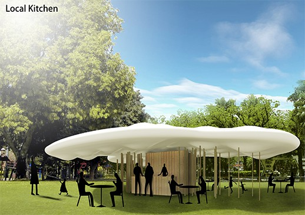

LOCAL KITCHEN

LOCAL KITCHEN, 2013
JAPAN
Representing Stanford University, Beverly led a group of international students in a pavilion competition at University of Tokyo, sponsored by the Dhillon Marty Foundation. This project won the “Citizen Award” for the concept of a mobile kitchen which would serve as an economic catalyst for depressed regions of Japan.
The design reflects the efficiency, openness, flexibility of Japanese culture. Local Kitchen is delivered to each town as a compact container which measures 3x3x3 meters. However, a large, cloud-like canopy extends laterally to define the gathering area for the community. Similarly, the boxlike container expands and opens to engage the community and the surrounding landscape. The expandable panel system can be adjusted to create a variety of spaces and relationships to each specific site which is selected. The canopy is comprised of a double membrane system, similar in technology to inflatable stadium roofs, and it is inflated with air. However, the membrane is made of a plant- based lignin product which offers good UV protection. The thickness of the roof can vary according to the weather conditions by adjusting the cables which hold the two sides together. The shadows cast by the canopy can be altered. An a sunny day, the cloud can thicken, increasing the protection of the canopy. On a cloudy day, the the cables can be tightened, resulting in a thinner cloud. The container houses a kitchen, toilet room, storage, and a flexible space which can serve as the living, dining and sleeping space. Panels extend from the box to define layers of space which create a gradation from private to public.
© 2023 BACH ARCHITECTURE. All rights reserved. | 3752 20th Street, San Francisco, CA 94110 | (415) 425-8582 | info@bach-architecture.com